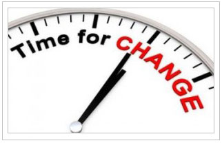

How To SHED Unwanted Body Fat Fast
If you want to "Lose 10-30 Pounds" and get a head-turning body, then this will be the most exciting letter you'll ever read"
This is Your Honest Source for Weight Loss… No BS-Just Results!
Have you ever noticed the magazines while you are
standing in line at the checkout counter?
Each cover has an "in-shape and toned"
celebrity or fitness model.
And each cover is loaded with catchy headlines like...
- Amazing Abs in Just 17 Days
- Blast More Fat… in Less Time
- Lose 2 Inches in 2 Weeks
- Six-Pack Diet
- Boost Your Energy & Sex Drive
The truth is, mainstream media and the health industry set the bar
pretty high with "examples" of what we "should" all strive for when it
comes to the "ideal" body and how to achieve it.
If you are honest with yourself, I'm sure you will agree that on
more than one occasion you looked at these "examples" and said,
"I wish I looked like that."
It's ok to admit this; I have been
in your exact shoes (more on this in a moment).
I bet your next thought was, "How do I do this?"
Now, there are literally unlimited "guides or tips" that you can
follow when trying to find some direction for your weight loss goals…
however, the more you dig into these "guides" or "tips"… the more
confused you become.
The point of frustration comes from ALL the conflicting information
on how to exactly achieve your "perfect body." From magazine articles…
to TV commercials with workout gadgets and gizmos… to a diet plan that
simply does not work… there is just a CLUSTER of information, and of course,
each one claims that it's a "NEW weight loss breakthrough!"
Let's not sugarcoat things; 99% of this information is straight up BS!
And if there's one thing I hate, it's BS!
Are you tired of the BS? Of course you are…
What if I told you… or better yet, what if I showed you, a simple, easy-to-follow, physician-trusted, scientifically-backed way to rapidly lose weight?
Would you be interested? Of course you would…
Hi, my name is Kyle Bonnstetter, and a few years ago, I was
your average desk-job junkie, slowly watching my youth (and trim
waistline) disappear. You see, I hadn't been in good shape since my
college days, and I truly was not living up to my potential.
I tried just about every diet plan and workout routine I could find,
and I bought every weight loss pill that crossed my path. Every once
in a while, I would manage to lose a little weight. But the minute I
started eating "normally" again, I would gain it all back… and then some.
I would get angry with myself, throw in the towel, and say, “Who cares?
I'll start the new diet tomorrow”…and then I would polish off a large pizza
and wash it down with a soda or a few beers. This lifestyle had me TIRED,
FAT, and FRUSTRATED!
Finally, after I finally became sick and tired of being sick and tired,
I learned how to lose weight the right way… it was simple and easy-to-follow.
People I worked with noticed I was losing weight within the first 7 days! And
after just 28 short days, I noticed my abs "re-emerging."
The fat started to
melt away, and almost daily, the scale moved downward, as the pounds plummeted.
Ultimately, I lost 37 pounds in less than 12 weeks!
The results went way beyond just weight loss… I noticed a HUGE
spike in my energy levels, and both my professional and personal
life started to truly "TAKE-OFF!"
I used to hate taking pictures; maybe you can relate. I would look
at them ashamedly and think… "OMG I look awful!" But not
anymore…my confidence and self-esteem have never been higher!
Here are a couple of pictures of my beautiful wife and me on a recent trip to Hawaii.
Trust me, I never get tired of hearing, "WOW, Kyle, you look great"! Can you blame me?
Quick Question:
When was the last time someone said those words to you?
"It's ok if it has been a while-I've been there."
NOW It's Time to CHANGE THAT!

I'm a big believer that everyone can be a better person than he or
she is right now, and I want to help show you the way to the best
version of YOU. In a moment, I'll reveal 5 simple, easy-to-follow
principles that will help you SHED unwanted body fat FAST.
This is not another weight loss gimmick… and don't worry, you don't
have to turn your life upside down to experience fast, extraordinary
results. Even better, what I'll share with you is guaranteed to work,
regardless of your age, gender, or even your genetics.
The truth is that we all have different lifestyles and varying
levels of fitness. It does not matter whether you're a gym rat,
a weekend warrior, or not currently active, these
5 simple principles
I'm about to reveal can HELP you dramatically improve your health and
achieve your ideal body. Of course, I always recommend consulting your
doctor before making any major change in your daily routine.
If you keep doing what you've always done, you'll continue getting the same lackluster, frustrating results. As Einstein so perfectly said, doing the same thing over and over again and expecting different results is insanity. If you're not getting the results you want, you must CHANGE IT UP!
Principle #1
Start Setting Goals
Zig Zigler said, "The fact is that you can't hit a target that
you can't see. If you don't know where you're going, you will probably
end up somewhere else. You have to have goals."
Ask yourself : "What is my goal… what do I want to achieve?"
This is your vision of yourself, and to help get you focused, here are a few examples…
- I want to lose 20 pounds of fat.
- I want to drop 2 sizes, from a size 8 to a 6.
- I want to be able to take my shirt off when I'm on vacation.
According to psychologist and best-selling author Richard Wiseman, your goals should be:
Speaking of time-based, after you identify your goal, you'll
want to set a deadline… I recommend setting a 90- to 120-day deadline.
I know you have heard this before, but it is critical you WRITE down
YOUR goals! I know what you are thinking… "I don't have to write these
down. I will remember."
Sorry…That NEVER WORKS…
Here's why… take, for example,
when you are heading to the
grocery store to get a few things, like eggs, milk, bread, mustard,
and brown sugar. Before you leave, you know exactly what you are
heading to the store for, so you don't write them down.
I think you know where this is going… You get home, and you
realize you forgot the mustard! Dang it!!
Now, let's think about the time you actually WROTE down what
you needed at the grocery store… Hmmmmmmmm, I bet you came home
with everything checked off.
It's simple; writing down goals keeps you accountable, and it
also sharpens your focus by setting a clear purpose-intention.
Setting a specific goal and writing it down is the first step
toward success.
Principle #2
The Truth about Hydration
Let's consider these two points…
With that in mind, I think it's safe to say that proper
hydration has the potential to have an immense impact on
your daily life.
The truth is being dehydrated by as little as 1 to 2%
of your body weight can impair both mental and physical function,
leading to a suppressed metabolic rate (calorie burn) and reduced fat
burning. Not only that, fatigue and weakness are a direct result of
even mild dehydration.
The key is to drink water even when you're not thirsty.
Thirst signals may be unreliable, and by the time your body
clues you in, "Give me a drink"… you're already too low. Not
only that, some folks tend to confuse hunger with thirst, leading
them to eat unnecessarily when their bodies are actually looking
to be hydrated.
Hydration needs vary depending on the individual, activity
level, health conditions, and the heat and humidity of your
environment. In general, the Institute of Medicine
recommends about 9 cups of water for women and 13 cups for men.
To make this simple, drink a glass of water when you first wake up,
drink another before each meal, and sip on water throughout the day.
By doing this, you will stay optimally hydrated.
Principle #3
SGet Rid of the Self-Sabotaging Word "Diet"
There is no perfect "diet" for everyone…
The truth is, what works for one person may not "work" for the
next. Diets are ineffective, and by prescribing yourself to a diet,
you've already got one foot in the weight regain grave, so to speak.
Diets-which are typically characterized by extreme overhauls,
restrictive external rules, and unsustainable habits-may lead to
short-term results, but as soon as you start eating "normally"
(read: processed junk food) again, you will regain the weight you
lost back-and most often, even more.
This is called "Yo-Yo Dieting." The only approach that can help
you achieve true, lasting results is tweaking your lifestyle and
building healthier habits that truly support your goals.
Overall, nutrition is vital to successful results, to optimizing
health, to improving performance, and to achieving the body of your
dreams. It is also extremely important that you enjoy the food you are
eating and that your nutrition plan takes into consideration your personal
preferences and food aversions.
If you're anything like me, you’ve scoured the Internet, magazines,
and books to find the "best" diet. Take a look back at your previous
attempts, and honestly think about the following question: How did
those plans work for you?
My guess is that if you're here reading this, then the answer
to that question is something along the lines of, "Not so much."
Or, at best, they "worked" for you in the short-term, only leading
you right back to where you started-or worse.
The truth is that the best diet is the one that you can stick to.
That’s right, researchers have compared nearly every major diet plan
out there, and they found that there's very little difference in terms
of results. The most important factor, they find, is adherence, or the
ability of folks to consistently meet program goals for diet and
physical activity.
With that being said, there are some common themes among the most effective nutrition plans:
- They raise awareness and attention
- They focus on food quality
- They help eliminate nutrient deficiencies
- They help control appetite and food intake
- They emphasize regular exercise
As you can see, the first step in improving your nutrition
is less about the "what" and "how much" as it is changing how you
eat. This is a tool that you can take with you anywhere, no matter
what or with whom you're eating. Checking in, slowing down, and eating
until you're about 80% full makes your body the boss, and it helps
you learn appetite awareness-distinguishing when you feel that you
want eat, need to eat, and have eaten enough (or, too much).
Despite the fact that most people think that a good nutrition
plan should involve extensive suffering and restriction, the
fact of the matter is that when you focus on building your
nutrition around healthful, wholesome foods (like those listed below-, you
can actually eat MORE, not less. That's right, when you ditch processed "junk"
foods and replace them with plenty of lean protein-dense foods, low-energy-dense
veggies, and healthy fats, you'll be improve appetite control, overall health,
and body composition.
Examples Of Healthy Nutrition
- Protein-dense foods: Lean Ground Beef, Chicken, Turkey, Salmon, Cottage Cheese, Yogurt, Eggs
- Healthy fats: Olive oil, Coconut, Nuts, Seeds, Avocados
- Veggies: Green, Red, Orange, White, and Purple veggies…and LOTS of them
- Brightly colored fruits: Blueberries, Cherries, Strawberries, Blackberries, Apples
- Smart carbs: Starchy vegetables, Legumes, and whole, minimally processed grains (as opposed to foods made from processed flours)
Quick Facts
- Unprocessed Food is Healthiest
- Eating Vegetables Will Improve Health
- Avoid Artificial Trans Fats
- Omega-3 Fats Are Crucial
- Sugar = Empty Calories
Examples Of Unhealthy Nutrition
- Packaged snacks: Chips, Cookies, Crackers, Sugar-coated nuts
- Processed meats: Lunch meats, Hot dogs, Sausages
- Calorie-containing beverages: Soda, Fruit juices, Sports drinks, Alcohol
- Pre-made meals: Canned foods, Frozen entrees, Pizza
- "Junk" food: Ice cream, Fast food, Bagels, Sugary breakfast cereals
Rule of thumb… The easiest way to be sure you're getting
healthy nutrition is by preparing food yourself. Always keep your
cupboards stocked with healthy foods. Creating a healthy food
environment is one of the most important keys to success. According to
renowned nutritionist John Berardi, the number one rule of good nutrition
is the following:
"If a food is in your house or possession, either you,
someone you love, or someone you marginally tolerate will eventually
eat it."
Get rid of the garbage and set up yourself for success by making
healthy food options readily available…after all, the rule above
has a corollary:
“If a healthy food is in your house or your possession,
either you,
someone you love, or someone you marginally tolerate will eventually
eat it.”
Principle #4
Make Yourself a Priority
One of the most common excuses that I hear from folks is:
"I don't have time; I'm just too busy right now."
I get it; being "busy" is the buzzword of the 21st century.
However, as author Tim Kreider says, being busy is not the same
as being productive, and it is often "a boast disguised as a
complaint"-and an excuse. But it's not a good excuse to not take
care of yourself.
It is important to block off time for yourself to do
something active… bike, run, walk, play tennis…anything that
gets you moving. Treat the time like you would a doctor's
apportionment or an important meeting for work; write it on the
calendar so everyone knows you are busy at that time.
Regular physical activity can positively impact nearly every
aspect of life. Exercise plays an important role in
cardiovascular health and disease risk, carbohydrate tolerance
and insulin sensitivity, strength and flexibility, mental health
and cognitive function, weight management, feelings of
wellbeing, energy levels, vitality, quality of life, and much, much more.

Time Saving Tips
- Limit your TV time
- Turn off your phone
- Set aside a block of time
- Set up a home workout area
- Limit your Internet/Facebook time
I know from experience that excess weight can really
slow you down; it drains you of your energy and ambitions
in your daily life. But losing weight is like a shock of
electricity-it truly energizes you!
Everyone needs to exercise; the benefits are truly indisputable,
and nothing makes you feel more alive than getting your heart
pumping.
A Body in Motion Will Stay in Motion
Simply put, the best time to exercise is when you have time;
however, I feel that most folks will find that scheduling time to
exercise first thing in the morning-before the rest of your life
(your kids, your job, errands you have to run, the overall daily grind)
gets in the way-is best. What's more, studies show that exercising first
thing in the morning on an empty stomach can burn up to 33% more fat,
and on top of that, boost fat burning another 50% up to 8 hours after
exercise. That's what I call afterburn!
Unfortunately, just like most diets are unsustainably restrictive,
most exercise programs today are way too long. Statistics show that
individuals who exercise for just 20 - 30 minutes a day are more consistent
with their workouts than those who spend 45 minutes or more working out.
Along those lines, more and more studies are demonstrating that you don't
need to spend hours upon hours exercising to achieve your health and
weight loss goals. Along those lines, high-intensity interval training
is a time-efficient exercise strategy that can promote cardiovascular
fitness and health, insulin sensitivity and metabolic health,
body composition, and more. So keep it short!
Exercise Improves Mood
Need an emotional lift? Need to blow off some steam after a stressful day? A quick workout at the gym or a brisk 30-minute walk outdoors can work wonders! Physical activity stimulates the production of "feel-good" chemicals that will leave you feeling happier and more relaxed. As a bonus, after just 30 minutes of activity, you'll accomplish a serious boost in your confidence and dramatic improvement your self-esteem. High-five!
Principle #5
Supercharge Your Results
The fact of the matter is that even the best, most
effective nutrition and exercise programs can use some
supercharging. Simply put, your body is hard-wired to combat
your best efforts for a lean, tight body. You've probably
experienced it before with your previous efforts: Your metabolism
slows to a screeching halt, and your appetite leaves you ravenous.
These are fundamental adaptations, but the good news is that
there is a preponderance of scientific research demonstrating
that certain key nutrients can help aid you in your weight loss
battle. That's right, you can use research-backed supplements to
help you accelerate your progress.
However, there are also a lot of garbage supplements out there
that are not based on research or don#t contain effective levels
of key ingredients. With that being said, I've dug through hundreds
upon hundreds of scientific studies, and I have found several
research-backed ingredients that I truly believe can help you
attain your goals.
Accelerate Metabolism and Incinerate Fat with Caffeine and Green Tea Extract
When it comes to weight loss, one of the most common struggles
that people face is a sluggish metabolism, and that’s precisely where
caffeine comes into play. You see, studies have shown that caffeine
boosts metabolic rate, and what's more, it also increases fat burning.
In addition, caffeine may help increase alertness and energy levels;
enhance performance on mental tasks; improve mood, feelings of wellbeing,
vigilance, and cognitive function; optimize performance on physical tasks;
and reduce perceived levels of exertion
(i.e., make physical tasks feel easier).
Simply put, caffeine is one of the most studied ergogenic aids of
all time, and that simply means that it has been shown time and time
again to boost performance-and metabolism!
Like caffeine, green tea extract has been shown to increase
the body's fat burning both during exercise and at rest-even
while you sleep! What's neat is that these effects are independent
of caffeine. In other words, green tea extract and caffeine can work
synergistically to boost metabolism and fat burning.
In one study, participants supplementing a reduced-calorie
diet with a green tea extract for 8 weeks experienced a
2-fold increase in metabolic rate, leading to two times greater
weight loss compared to the placebo group (i.e., diet alone).
In addition, research shows that supplementation with green tea
extract can also help improve appetite control and reduce hunger,
and what's more, studies show that green tea extract can also
improve carbohydrate tolerance and insulin sensitivity.
Optimize Carb Tolerance and Crush Cravings with Cinnamon Bark Extract, Green Coffee Extract, and Olive Leaf Extract
Speaking of which, carbohydrate tolerance and
insulin sensitivity touch on nearly every aspect of health
and wellness, as they impact weight management and fat burning,
metabolism, energy levels, appetite control and cravings,
cognitive function and performance, cardiovascular health and
aging, vitality, feelings of wellbeing, and much, much more.
Studies consistently show that cinnamon is markedly effective
at improving carbohydrate tolerance and insulin sensitivity. In
one randomized, double-blind, placebo-controlled study, participants
taking a cinnamon bark extract twice daily for two months experienced
an improvement in carbohydrate tolerance that was 300% greater than
the placebo group.
In another placebo-controlled study, participants taking a
cinnamon bark extract twice daily for 12 weeks experienced
significantly improved carbohydrate tolerance (both compared to
baseline and placebo), and even though this wasn't a weight loss
study, the folks taking the cinnamon significantly improved body
composition.
Regular moderate coffee consumption is linked to better
insulin sensitivity and carbohydrate tolerance, reduced blood
pressure and body weight, better cardiovascular health, and
improved cognitive function.
Because some of these findings have been associated with
both regular and decaffeinated coffee, researchers attribute
them to specific polyphenols found in coffee called chlorogenic acid.
Green coffee extract is a decaffeinated extract that is standardized
for chlorogenic acid, which has been shown to reduce the absorption of
carbohydrates from the digestive tract, thereby improving carbohydrate tolerance.
In one study, participants taking chlorogenic acid-enriched
instant coffee daily for 12 weeks lost over 3 times more weight
than folks taking decaffeinated instant coffee. In a review of
multiple studies investigating the effectiveness of green coffee
extract, researchers concluded that, on average, supplementation
with green coffee extract leads to upwards of 5 pounds more
weightloss compared to placebo groups.
Olive leaves have been widely used in traditional remedies in
European and Mediterranean countries. Research shows that olive
leaf extract can significantly improve carbohydrate metabolism by
reducing the body’s ability to digest and absorb carbs.
Olive leaf extract has also been shown to promote the release
of a hormone called GLP-1, which promotes insulin sensitivity.
What's more, GLP-1 also promotes satiety and reduces appetite. Not
only does olive leaf extract promote improved carbohydrate tolerance, it
can also help suppress hunger.
Boost Mood and Overall Health with
Vitamin D
Arguably one of the top nutrient deficiencies, research shows a strong correlation between low vitamin D levels and overweight/obesity, excess belly fat, poor carbohydrate tolerance and insulin sensitivity, and negative mood states, which may directly lead to increased cravings, poor food choices, and overeating. Studies suggest that low vitamin D levels may be associated with increased hunger, and multiple studies have demonstrated greater weight and fat loss when reduced-calorie diets are supplemented with vitamin D.
So, what does all of this mean to you? It means that with the help of the 6 research-backed ingredients above, you can supercharge your weight loss efforts and dramatically improve your overall health and wellbeing.
It's Simple: Burn More Fat…Faster
At this point, I'm sure you're probably wondering where
you can get your hands on these 6 exotic, scientifically-backed
ingredients…plus wondering how much of each to take and when?
Whoa…it's getting confusing!
But, don't worry… because I have some GREAT news for you!
As I mentioned before, I'm here to help, and I want to clear up any
and all confusion. You see, I've researched these ingredients and found
a product that contains the exact amounts of ALL 6 ingredients that research
has shown to be needed to "Supercharge" your fat loss efforts… and it's
guaranteed to produce results.
It truly is a unique and special blend of high-quality nutrients.
Introducing the NEW Supercharged
Fat Loss Formula...
CTU TRANSFORM™
Benefits Include:
- Boosts Your Metabolism
- Increases Energy
- Helps Control Appetite and Cravings
- Promotes Healthy Blood Sugar Levels
- Supports Fat-Burning Hormones
- Plus many more…
Transform is scientifically-designed to maximize your
body's ability to burn fat, HELP you shed unwanted body fat,
and transform your body!
This is the answer you have been looking for!
It couldn't be any easier for you… just take 2 capsules
in the morning and 2 in the afternoon and let science do the rest.
And even better, each ingredient in Transform is 3rd-party tested
for identity, purity, and potency, and it is manufactured at a top-tier
manufacturing facility right here in the USA!
Beyond that, science convincingly shows that the ingredients found in
Transform work! Not only that, this cutting-edge formula provides the
precise amounts that research has shown to be effective- Transform is
guaranteed to work!
Simply put, Transform gives you a
1 -Year Unconditional Satisfaction Guarantee that you will shed
unwanted body fat, boost your energy levels, and improve your
overall health OR your money back!
STOP! Do me a favor. Think about how much time, money, and effort
you've wasted over the years on bogus weight-loss products and so-called
health "solutions"…only to end up tired and frustrated with a belly
to boot.
Transform Your Life NOW!
Trust me, if you're serious about losing weight… then Transform is for YOU. And there will never be a better time because Transform is so NEW to the market that they are offering an…
Introductory Rollout Sale
SALE
For The First
Bottles
Out The Door!
The regular price for a NEW bottle (1-month supply) of
Transform is $99.
However, because it's the first time
Transform is available to
the public, you will get a FULL 1-month supply for only $69.
That's a savings of $30.
Better yet, to get our Best Deal, when you order 3 bottles,
you'll pay just $59 a bottle... PLUS
you get a 4th bottle FREE
(That's more than HALF OFF the regular price).
Inventory is limited, however, and only 1,200 bottles of
Transform
are available at this special offer. After the initial 1,200 bottles
are gone, the retail price will go back up to $99 per bottle. So,
grab yours before it's too late!
There's no need to spend another minute being frustrated and
tired; simply click on the button below and get ready to
Transform your body and life!
This is SUPER SIMPLE… Transform
is 100% guaranteed to
work for you. This is a "no-brainer" and 100% No-Risk you
simply cannot lose!
Transform offers a 1-Year 100% Satisfaction, Money-Back
Guarantee! You have a full 365 days to get a full refund if for
any reason you aren't satisfied.
1 Year, 100% No-Risk, Iron-Clad,
Money-Back Guarantee
Here's Exactly What You Need To Do NOW:
Simply click on the button below. When you do, you will be taken to a secure order page where you can choose your money saving package.
To A Better "YOU"... You Deserve It
Frequently Asked Questions
How many bottles should I order?
If you 10 to 15 pounds to lose, we recommend you selecting our most popular package Buy 3 Bottles PLUS get 1 Free. This recommendation will ensure you have ample supply of Transform to help you achieve your weight loss goals and allows you to take advantage of our lowest possible prices.
What are the ingredients and amounts used in the formula?
Is Transform a "magic pill" or weight loss solution?
NO. Transform is here to help support your efforts and speed up the process. It is important that you combine the Principles discussed earlier with Transform to achieve your desired results. Doing this will help get you over your current weight loss plateaus.
How do I use this product?
Simply take 2 capsules with breakfast and 2 capsules with lunch. Do not take within 6 hours of bedtime.
How long before I see results?
It is important that you take Transform each and every day. Results will vary among individuals. However, you should expect to see noticeable difference within 30 days. Many users report feeling a sense of "more energy" along with a decreased appetite within the first week.
Does this product contain caffeine?
Yes, Transform does include caffeine. Studies have shown that caffeine boost metabolic rate, and what's more, it also increases fat burning.
If I have a medical condition, can I take this product?
Transform is considered safe and extremely effective for nearly everyone. However, we always recommend consulting your family physician before making any major change in your daily routine. This product is for use by healthy adults over 18 years old. Do not use if you are pregnant or nursing or if you are at risk or are being treated for any medical condition.
How will this product be shipped to me and how quickly?
We will ship your order directly to your shipping address within 5 to 7 business days. International orders typically can take up to 15 business days (plus customs clearance time).
Will anything else be sent to me, or billed to me, after I place my order?
No. You only get shipped what you order right here, today.
Where else can I get Transform?
The only place you can get Transform is right here at this hidden website. Transform is not sold at any other store or site.
What if Transform doesn't work for me?
You have an entire year to test out Transform and if it doesn't work for you, you will receive a FULL refund as you are protected by a 1 Year Money Back Guarantee. Even empty bottles will be refunded. You can not lose, this is 100% risk free offer.